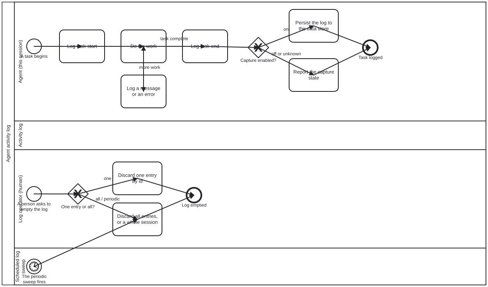

Generated from
cat-harness/skills/sdlc/sdlc-core/activity-log.md— do not edit here.
Activity log — what an agent did, kept out of the graph
Write an entry when you start a task, when you end one, and whenever you
have something a later reader would need. Entries go to fsh-guts/logs/,
and nothing reaches the git data store unless capture is explicitly on.
Owner, 2026-09-19:
an agent whenever it starts or ends a task or has a log message, they should add an entry to a log entry in the trash. […] by default commit audit log to git data store is turned off - need explict like (cpature log when agent runs this workflow).
The role is mechanical
log in scenarios/roles.json: actorKinds: ["system"]. It is written to
and emptied by an actor, and it decides nothing. The precedents are
work-plan and corpus, and this is deliberately the same shape rather than
a new one. A mechanical role is still a real role (owner, 2026-10-16): this
skill is its contract — the shape of an entry and where it goes — and the
actedUpon flag that once exempted it from role-has-actor is retired.
The entry
schemas/log-entry.ts. Every entry carries $schema: folio-log/v1, because
a directory says what to EXPECT and the file says what it IS — without it, a
log entry is told apart from a discarded proposal by its folder alone, which
is the coincidence-not-contract problem the bean and workflow stores already
fixed.
| field | why it is there |
|---|---|
event | task-start · task-end · message · error |
summary | one line, so a long log stays skimmable; detail goes in detail |
actor, role | who, and which lane they were acting in |
process, task | the BPMN process and step, when inside one |
bean, branch, session | so a run’s entries can be found and emptied together |
references[] | what this entry points at — a chat, an issue, a commit, a command. See below |
execution | command-execution detail, when the entry IS one |
capture | whether this entry persists — three-valued, see below |
role, process and task are optional and meant to be. An agent
writes log lines outside any process, and inventing a lane for those would
be the fake-reference failure activity-names-skill exists to prevent.
What an entry points at — references[] is OPEN
Owner, 2026-09-19:
log should be rich schema including references to discussion/chats, cmn execution logs, etc.
The etc. is the specification, not a trailing-off. A closed list is
wrong within a week — the interesting thing to reference is whatever the work
touched, and nobody enumerates that in advance. So kind is an open string
with a KNOWN SET, and an unrecognised kind is accepted and flagged, never
refused:
discussion · comment · issue · pull-request · commit · command · workflow · artefact
A reference is { kind, ref } plus an optional title and at. ref is
required — a kind with nothing to point at records that something of that
sort was involved and gives the reader no way to reach it, which is the
abandonment-or-accident ambiguity in a different store.
A list, not named fields. issue / pr / commitSha would have been the
obvious shape and is wrong: one entry routinely touches several of one kind. A
step that answers three review threads has three comments to point at, and
comment1..comment3 is where that design ends up.
Unknown kinds are surfaced rather than rejected. Open is the point, but a
silently open list is how issue, issues and gh-issue end up in one
store with nothing able to query it. writeLogEntry returns
unknownRefKinds, and the one-line report says so — so a typo is noticeable
without the parser being able to refuse a legitimate extension.
cmnwas read as command. There is no CMMN in this codebase — the process standards here are BPMN and DMN — and “execution logs” pairs with a command. If CMMN was meant, it arrives askind: "case"with no schema change, which is exactly what an open list buys.
Command execution has its own shape, and no output field
execution carries command, argv, exitCode, durationMs, cwd and
outputRef. It sits beside references rather than inside it because an exit
code is a queryable fact, and ref: "exit 1" is not a field anyone can
filter on. An absent exitCode means it did not finish, which is not 0 —
the third state again.
There is deliberately no field to inline output into. outputRef points
at where stdout and stderr went. Command output is the likeliest place for a
token or a connection string to appear, and capture: "on" puts an entry in
git in a repository that may be public. An output: string field would invite
exactly the leak the section below warns about, and an absent field is
stronger than a warning. The same caution applies to command itself: a
command line carries its own arguments, and --token=… is a command line.
Turning it on — <cat-harness.processes:log capture="on"/> on the process
Owner: “need explicit like (capture log when agent runs this workflow).”
That is a declaration on the process, parsed at load and throwing on a
value the engine cannot honour, exactly as <cat-harness.processes:bean op> does. A diagram
asking for a mode that does not exist must not load and quietly log nothing —
worse here than elsewhere, because the missing artefact is the record.
workflow_start writes task-start; workflow_complete writes task-end
for the step just recorded, with the instance’s status in the detail. The step
is the unit, not the whole process: waiting for the process to finish would
lose every intermediate entry, which is most of what a log is read for.
Marked today: crdm-requirements, editing-hci-validation,
content-lifecycle.
Not a call activity, and the reason is load-bearing. “Connect it to
existing processes” reads as add a callActivity — but a call activity is a
node in the control flow, so the log would become a step that must be
completed in sequence. Two of those three are enforcement="strict", where
workflow_gate refuses a step that is not enabled, so it would have changed
what those diagrams say and needed policy relaxations for a concern that is
not a phase of anything. An extension element adds no node and no flow, and
there is a test asserting the strict processes still enforce exactly what they
did.
unknown is not writable as a declared value. It is what the absence of
a declaration resolves to; writing it down would be a diagram asserting that
nobody could tell, which is not something a diagram is in a position to assert
about itself.
Capture is off by default, and unknown is a real answer
fsh-guts/logs/ is inside the repository, so writing there would be
committing unless something stops it. The default is write locally,
ignored by git — the agent can read back what it wrote this session, and
nothing enters the data store until a workflow or the config asks.
off the default — written, not committed
on explicitly enabled, for this workflow or by config
unknown the setting could not be determined
unknown is not a tidy-up, it is the point. A logging system that
silently keeps nothing is worse than none, because the agent believes it has
an audit trail and acts on that belief. So:
- absent configuration resolves to
unknown, never tooff— they are different claims.offsays somebody decided;unknownsays nobody could tell, and the first is a choice while the second is a bug. unknowndoes not persist. When the setting cannot be determined the safe reading is the default, and committing an audit trail nobody asked for is the worse of the two failures.- report the state. Say which of the three you are in when you start logging; do not let a reader infer it.
Same discipline as ci-health never rendering “could not check” as green,
and renderingMediaType returning undefined rather than a plausible guess.
Emptying — and the exception to the never-delete rule
Three operations: one entry, all of them, and a periodic sweep.
An entry carries a stable id so the first is possible at all, and
session so a whole run can go at once.
This is the one exception to fsh-guts’s rule that nothing
is deleted. That rule exists because a removed artefact cannot be told
from one that never existed, and a scrapped thing records a dead end so the
next agent does not re-enter it. A log entry records no decision. It is
a trace of activity, it is expected to be voluminous, and keeping it forever
would drown the directory that exists to make discarded decisions
findable.
So: logs may be emptied without confirmation; everything else in
fsh-guts/ may not. Stated here because an agent reading both skills and
finding no exception would either never empty the log or start deleting
proposals, and both are wrong.
The exception was granted to a KIND OF FILE, not to a path
emptyLog(root, selector) in src/logging/log-sweep.ts, with the selector
being one of { id }, { session }, { before } or { all: true }. There
is no default selector: an operation with no undo that empties everything
when the caller passed nothing is the wrong way round.
A file is removed only if it declares itself a folio-log/v1 entry. The
obvious implementation — rm the directory’s contents — would relax the
never-delete rule for a path, which is not what was granted. A stray
proposal dropped in the log directory keeps every protection it would have
had one folder up. Same $schema contract the bean and workflow stores use,
and the same reason: extension is a coincidence of the current layout, a
declaration inside the file is the contract.
Three consequences worth knowing before you call it:
- “Could not tell” resolves to KEEP. A file that will not parse is a file whose kind could not be established, and this module deletes.
- A symlink out of the directory is refused, checked by
realpathrather thanresolve— string arithmetic would not catch it, and here the cost of getting containment wrong is a loss rather than a leak. - Everything not removed says WHY, and
describeSweepseparates a selector miss from a refusal. “Nothing to delete” and “nine files I would not touch” must not read the same; the second is the one somebody needs to know about.scannedis the vacuity guard on every other count.
It is never published
fsh-guts/logs/ is inside fsh-guts/, which UNPUBLISHED_GRAPH_TYPOLOGIES
strips from every published graph — the kind, the directory, the skill and
every edge naming them (bean folio-assistant-uv09,
kg-export).
That is placement doing the work rather than a second rule, which is why logs can be as detailed as they need to be. There is a test asserting it for logs specifically, rather than trusting that the parent rule reaches them.
What not to log
- Secrets, tokens, credentials or personal data. Not-published is not
the same as not-committed and not the same as private: capture
onputs entries in git, and the repository may be public. - A substitute for a bean. A log says what happened; a bean says what is being worked on and what it waits on. An agent that logs instead of claiming is the 2026-09-18 unclaimed-work failure wearing a new hat.
- A substitute for the turn report. The log is for a later reader; the report is for the person in the room now.
Processes that run this skill
This skill has its own process: Agent activity log.

| process | step(s) that name it |
|---|---|
| Agent activity log | Log task-start; Log a message or an error; Log task-end; Persist the log to the data store; Report the capture state; Discard one entry by id; Discard all entries, or a whole session |